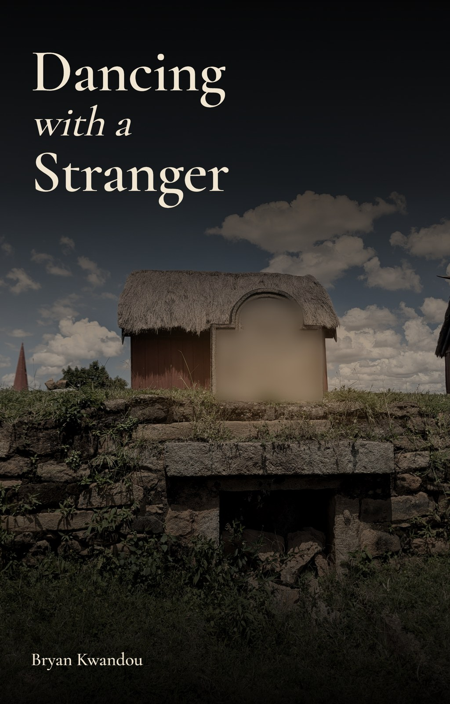

Dancing with a Stranger
A novel by Bryan Kwandou. This page lists the licence and source of everything used to make the book.
Summary
| Item | Source | Licence |
|---|---|---|
| Novel text | Bryan Kwandou, with an AI writing assistant | All rights reserved |
| Cover photograph | Cactus0625, Wikimedia Commons | CC0 1.0 |
| Cover typeface | Cormorant Garamond, The Cormorant Project Authors | SIL Open Font License 1.1 |
| Cover design | Bryan Kwandou | All rights reserved |
| This page | Bryan Kwandou | All rights reserved; system fonts only |
The novel text
Copyright © 2026 Bryan Kwandou. All rights reserved. You may read and quote short passages with credit. Please do not repost, translate or adapt the book without permission.
AI disclosure. The chapters are drafted with an AI writing assistant, Claude by Anthropic, working under Bryan Kwandou's direction. The law on copyright in AI-assisted writing varies by country, so the claim above applies only as far as the law allows.
The cover
The cover is a real photograph that has been graded and darkened, with the title set over it. It is not an AI-generated image.
| File | Rova d'Antsahadinta (11695).jpg |
|---|---|
| Photographer | Cactus0625, own work, taken 22 February 2026 |
| Licence | CC0 1.0 Universal, public domain dedication. Credit is not required and is given anyway. |
| Original size | 3072 × 4080 pixels |
| SHA-1 of the file used | 74ecd088e4674aa181ce1cf78a62f7c45478c6ca |
| Changes made | Cropped; colour, contrast and brightness changed; dusk gradient added; title and author name added; inscription blurred. |
.jpg){kind=link}
The photograph shows a real tomb at Antsahadinta, Madagascar, and its stone carries the names of real people. Those names are blurred on the cover out of respect. The tomb and the people named on it have no connection with the story.
The typeface
The title and author name are set in Cormorant Garamond, copyright The Cormorant Project Authors, under the SIL Open Font License 1.1. The cover contains the rendered letters only, and no font files are distributed with this book.
Places, people and names
This is a work of fiction. The characters, the village of Ambohitsoa, the Ambatovola site, the Compagnie Miniere de l'Est and its security contractor are invented, and any resemblance to real people or companies is coincidence. Real towns and roads in Madagascar appear as setting only.
Famadihana, the turning of the dead, is a living Malagasy tradition. The book treats it with respect; the wrongdoing in the story belongs to its invented characters.
Brand names that appear in the text (Toyota, Land Cruiser, Hilux, Coaster, Sprinter, Coca-Cola, Fanta and THB) belong to their owners. They are mentioned only as everyday objects, and none of those owners sponsors or endorses the book.